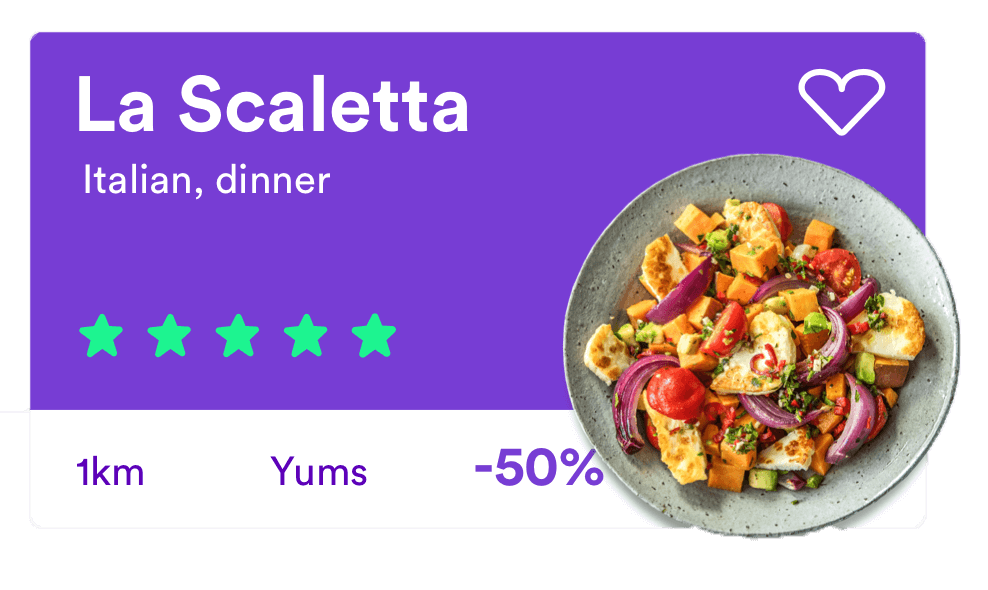

The brief
This project was part of a UX design class at Scuola Politecnica di Design (Milan).
Redesign TheFork by doing research, finding people’s needs and their issues with the service Add new features, or redesign new ones.
The challenge
We found TheFork a bit old-fashioned and found that some of the basic tasks users had to perform were quite complicated.
The Fork, being an app mainly for promotions and booking didn’t seem to have a design adapted to those qualities.

Style
We went for a younger, more vibrant look, modern cards and an original layout
With this in mind, we chose to give importance to quality pictures of the food, more consistent icons and stronger colors.
#773DD4
#1CF490


UX

Profile page:
a dedicated space for customers to see their fidelity points, past bookings, favorites and next booking.
Restaurant page:
Split information into categories and a navigation to access information easily


Map/search pages
An app adapted to anyone’s browse method of choice.
Role
UX designer
UI designer
With
Giorgia Ballante
Owen hung
Matteo Cordiner
For
Marco Catani
Scuola Politecnica Di Design
On
Sketch
Invision Studio
Craft